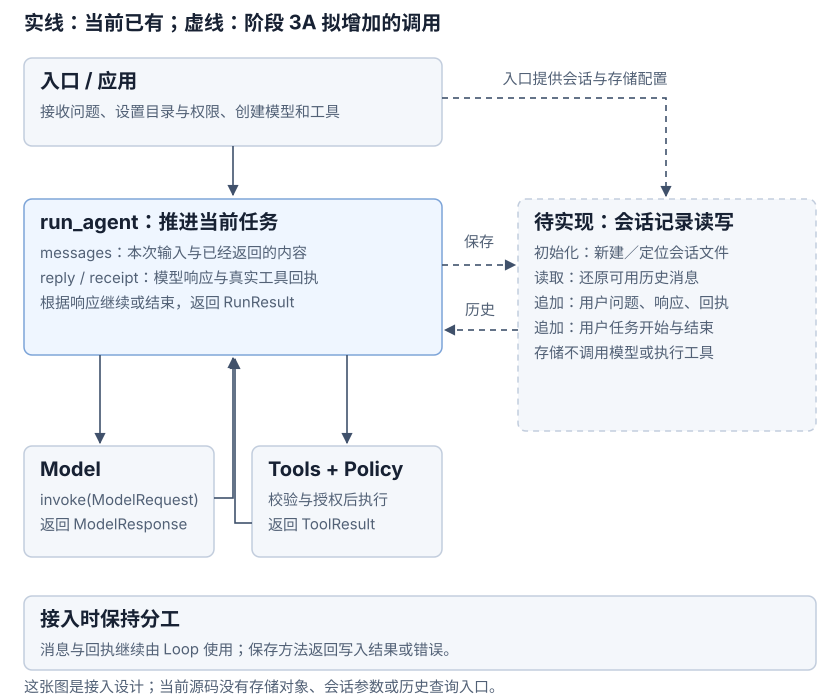

阶段 3A：会话与记录
1. 任务与完成标准：让下一次提问接上已保存材料
本阶段是待实现的练习设计。当前 run_agent() 只在一次调用中保留 messages、step、reply 与工具回执。CLI 每次启动处理一个独立任务；没有会话存储接口、历史查询命令或跨进程续接能力。
先读模块原理，再完成这个练习：读取 notes.txt 得到验收标记；退出程序；用同一会话追问；另外能查询原问题、工具调用、真实回执和两次回答。查询已有记录时不请求模型、不执行工具。
完成标准是“保存的材料能解释、重开后能正确读取、实际模型请求包含选定历史”，而不是仅打印一个会话 ID。自动恢复、分支、输入压缩和事件总线不在本轮范围。
2. 从现有消息选择首版数据结构
本轮拟采用：Session（整段对话）+ Turn（一次用户任务）+ 有序记录。沿用用户任务这一尺度便于观察开始与结束；一个 Turn 可以请求模型多次。这里的 Turn 接近 Codex 的用户任务尺度，与 pi 的“一个助手响应及其工具结果”不同。源码术语对照解释两者差异。
首版选一个会话一份 JSONL，路径拟为 .learn-agent/sessions/<session_id>.jsonl。理由是单进程练习可以直接查看顺序，先验证保存和重建，不急着建立数据库表、索引或单独 Step 实体。以后需要大量会话筛选时，再选择 SQLite 索引。
文件记录与内存消息分别设计：文件需要格式版本、任务归属和顺序；模型请求只接收模型模块能理解的消息。每次模型请求的编号仍可作为内存循环变量；是否保存完整请求快照留作调试选择。
这借鉴了 pi 的记录包装与 Codex 的内容／持久条目分离思路，未照搬它们的分支、压缩、异步写入与分页设施。
3. 明确每种数据的构成与保存位置
已有 ModelMessage：先复用，避免丢掉信息
现有类型定义在模型契约与工具契约。下面是当前真实类型；它们已经能支持单次循环，但还没有持久编码接口。
| 类型 | 构成 | 保存设计需注意 |
|---|---|---|
| TextMessage | role 为 system 或 user；content 为字符串。 | 用户问题写入历史；本轮 SYSTEM 作为当前配置提供，不必重复存成每个任务的历史消息。 |
| ModelResponse | text、tool_calls、stop_reason、model；可有 usage、refusal、continuation。 | 完整保存响应，不能只存 text。usage 含输入、输出、总 Token 数；缺失值仍是未知。 |
| ToolCall（嵌在响应中） | call_id、name、arguments。 | arguments 是原始 JSON 字符串；工具执行器负责校验与授权，存储不代替执行器解析。 |
| ToolResult | call_id、name、content。 | 成功 content 为 ok=true 与 data；失败为 ok=false 与 error(code, message)。用 call_id 对应原响应。 |
| ProviderContinuation | namespace 与 payload。 | 原生续接材料应随响应保留，继续由模型适配器核对与解释。 |
拟新增的文件记录：包装现有内容
| 记录类型 | 主要字段 | 作用 |
|---|---|---|
| session 文件头 | version、session_id、workspace、created_at。 | 每个文件一份；确认格式版本、会话归属与工作目录。 |
| turn_started | seq、turn_id、time、payload。 | 开始一次用户任务；payload 首版可为空，不重复保存问题。 |
| message | seq、turn_id、time；payload 内有 kind 与 value。 | kind 为 user / assistant / tool_result；value 保存完整现有数据。显式标签帮助反序列化。 |
| turn_finished | seq、turn_id、time；payload 含 status，失败时含 error。 | status 为 completed / failed；缺少结束条目表示未结束，不能自动推断成功。 |
看一条用户消息如何放进记录包装（设计示例）
{
"seq": 2,
"turn_id": "T1",
"type": "message",
"time": "2026-10-22T12:00:01Z",
"payload": {
"kind": "user",
"value": {
"role": "user",
"content": "读取 notes.txt，告诉我验收标记。"
}
}
}seq、turn_id、type、time 用于文件排序与归属；payload.kind 帮助还原类型；value 是完整 TextMessage。助手记录的 value 换成完整 ModelResponse，工具记录的 value 换成 ToolResult，不把它们统一压成字符串。
这些名字和字段是本轮设计建议，尚未成为源码接口。seq 在一个会话内递增；turn_id 归组任务；time 供观察。工具调用 ID、任务 ID、会话 ID 分别关联不同层面的数据。

哪些内容只在内存，哪些需要落盘
内存：model 连接、ToolRegistry 与 Policy、当前 SYSTEM、messages 列表、step、正在处理的 reply / receipt、本轮 tool_results。文件：会话头、用户任务边界、用户问题、完整响应与工具回执。record 列表、查询索引或摘要是以后按需要增加的结构；不能把运行连接直接写进 JSON。
首版正常写入时以完整 JSON 加换行追加；一个会话只允许一个写入者。需定义何时 flush、怎样报告写入失败，以及怎样识别末尾残行和未知版本。“已加入内存列表”与“文件记录已写入”要分别核对；没有完整写入策略时不能宣称断电后一定保留。
4. 用读取 notes.txt 与追问贯穿数据变化
当前示例文件写着“验收标记：LEARN-42”。假设第一轮模型提出一次 read_file 调用，再根据回执回答；第二轮直接利用历史回答。本节是设计示例，不是已经生成的运行记录，真实模型的调用次数可能不同。
第一次用户任务 T1
- 创建会话 S1，保存文件头；为本次问题创建 T1，追加 turn_started 与用户 message。
- 内存消息为“当前 SYSTEM + 本次问题”。第一次请求模型后，保存含 read_file 调用的完整 ModelResponse，并把它加入工作消息。
- ToolRegistry 校验参数、询问 Policy，获准后真正读取 notes.txt。将真实 ToolResult 追加到文件与工作消息，保留 call_id。此时工作消息有 SYSTEM、问题、调用响应与回执。
- 第二次请求模型取得最终回答，保存完整响应，再追加 T1 的 completed 结束条目。文件头仍属于 S1，T1 的临时内存可释放。
这一轮需要保存四条消息：用户问题、提出调用的响应、工具回执、最终响应。没有必要把两次请求分别包装成持久 Step 表，也没有独立的六类进度事件表。
退出后，在同一会话开始 T2
- 用 S1 找到同一文件，核对版本与 workspace；按 seq 读取记录。T1 有 completed 结束条目，且调用与回执完整，因而它的四条消息可用于追问。
- 创建新的 T2，保存开始条目与新问题；重建内存消息：“当前 SYSTEM + T1 四条消息 + 本次追问”。
- 将这六项消息交给现有模型模块编码并发送。读取旧的工具回执不会再次执行 read_file；新问题要求确认当前文件内容时，应由模型提出新的读取调用。
- 取得最终响应后，保存响应与 T2 的 completed 结束条目。T1 的消息仍属于 T1，不复制为 T2 的历史消息；T2 本轮 tool_results 仍只收集新执行的回执。
这说明会话 ID 的作用是找到记录。模型接上对话，是因为本次实际发送了历史；若只传 ID 却不加载消息，现有模型接口不会自动知道 LEARN-42。
此时看三份不同的材料
会话文件：一个 S1 文件头、T1/T2 各自的边界、六条原始消息。第二轮模型输入：当前 SYSTEM、T1 的四条消息、新问题。查询展示：按任务归组的完整过程，也可显示失败或未结束片段。三者内容相关，结构与用途不同。
5. 先约定查询，再接入保存
详情查询：输入会话 ID，定位文件，验证版本和顺序，返回原始记录或可读展示。可以按 turn_id 过滤；查询不创建模型服务，也不执行工具。原始 JSON 与展示文字分开，避免展示时丢失调用参数与错误。
模型历史读取：先解释任务起止，选取 completed 的完整任务，再将 message 的 kind/value 还原为 TextMessage、ModelResponse、ToolResult。SYSTEM 使用当前配置；失败与未结束部分先只用于详情查询。若 completed 任务中调用与回执不完整，应报告损坏，不能悄悄送入不合法历史。
会话列表：首版可以扫描文件头与末尾的任务信息，返回 ID、目录和更新时间。列表变多后再考虑 SQLite；不要为了列表展示预先把所有正文读入内存。
因此，追加文件并不意味着读取时只做一次“按行转 JSON”。先验证，再选择任务，再还原消息，再交给模型适配器，是相互独立的动作。参考实现的完整路径见pi / Codex 查询与重建。
6. 接入现有 Agent Loop：谁提供什么，谁真正执行

先阅读当前已有代码
main() 接收问题与设置工作目录、Policy；run_task() 注册工具、创建模型并管理模型连接；run_agent() 创建 messages，构造 ModelRequest，接收 ModelResponse，执行工具并追加 ToolResult。当前三者不接收存储参数。
实现时增加这些接入点
- 入口初始化：确定新建或复用的会话；打开存储并核对目录。入口管理保存资源的生命周期，不让模型选择存储路径。
- 任务开始：创建本次 Turn，保存边界与用户问题；读取可用历史。用当前 SYSTEM、历史和新问题构成初始工作消息。
- 模型返回：保存完整原响应用于查询，再判断停止原因；未正常完成的响应不得执行工具。正常响应同时加入内存消息。
- 工具返回：仍由 ToolRegistry 负责校验、权限和执行。取得真实回执后，保存并加入工作消息；存储层不按工具名分发动作。
- 任务结束：保存结束结论；异常时记录真实失败并原样传出，写入失败明确报告。没有结束记录的任务保持未结束，不自动重试旧调用。
这些是待实现的职责与调用时机，不是现成方法名或新增框架。可先用有实际职责的保存／读取函数；需要统一资源管理时再选类。首次不引入 EventBus、自动恢复、摘要或请求预算。
文件操作与记录追加不是一个事务。即使未来保存成功事件，也仍要根据真实回执与实际文件判断执行效果。
7. 实现后怎样验证，当前可以运行什么
当前可执行的是阶段 2 单次循环与本地检查。下面的 Agent 命令调用真实模型，会产生 API 用量；它尚不能用同一会话追问：
uv run python -m learn_agent "读取 notes.txt，告诉我验收标记。"
uv run pytest
uv run python scripts/check_docs.py未来保存／读取的本地验收：使用真实临时文件与本机固定响应完成“调用 → 回执 → 回答”；关闭并重开存储，确认原材料逐字段保留；抓取第二轮实际请求，核对历史顺序与 call_id；查询时确认没有模型或工具调用。固定响应只验证协议与控制流，不证明模型会自主完成任务。
失败验收：未知版本、末尾残行、写入失败、工具拒绝、模型失败和缺少结束记录都能被识别；原始证据不被吞掉；失败与未结束部分不会自动当作 completed 历史；不会静默重做工具。